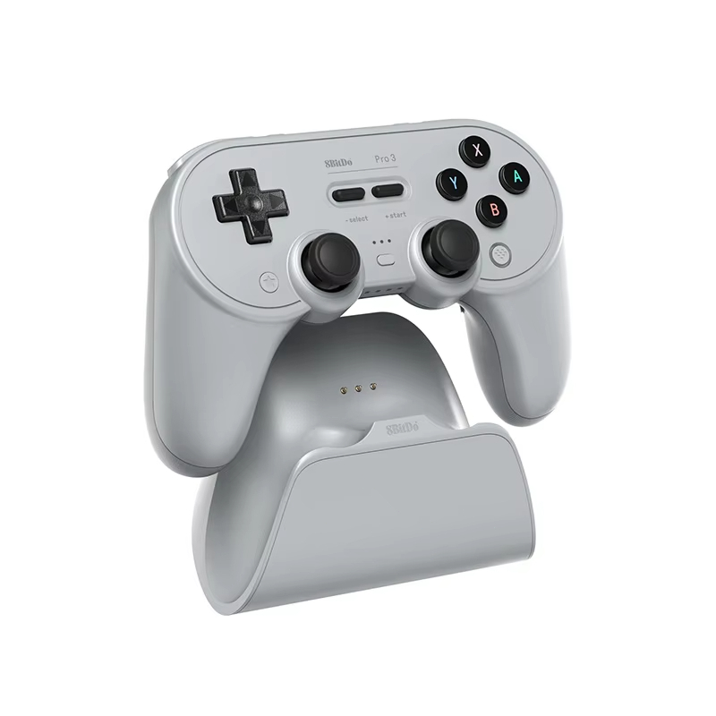

Recommended by 3 of 5 reviewers as the best modern-retro all-rounder - TMR sticks, charging dock and deep customization.
| # | Product | Recommended By | Best For | Price |
|---|---|---|---|---|
| 1 | 8BitDo Pro 3 | 3/5 reviewers | Modern-retro all-in-one daily driver | $64-79 |
| 2 | 8BitDo SN30 Pro Bluetooth | 1/5 reviewers | SNES-style emulation and 2D games | $39-49 |
| 3 | GameSir Pocket Taco | 1/5 reviewers | Retro gaming on your phone | $35-59 |
The consensus pick across TechRadar, PC Gamer and GamesRadar, and a TechDweeb favorite. TMR sticks, Hall Effect triggers, swappable face buttons and a dock that stores the 2.4GHz dongle.
Best for: Modern-retro all-in-one daily driver · $64-79
TechDweeb's retro-games pick. The revised Hall Effect version keeps the authentic SNES feel and the superb cross D-pad while eliminating drift.
Best for: SNES-style emulation and 2D games · $39-49
Reviewed hands-on by Pickr with a 3.5/5 score. The vertical Bluetooth controller that turns a phone into a Game Boy for 4:3 retro games - limited, but charming.
Best for: Retro gaming on your phone · $35-59